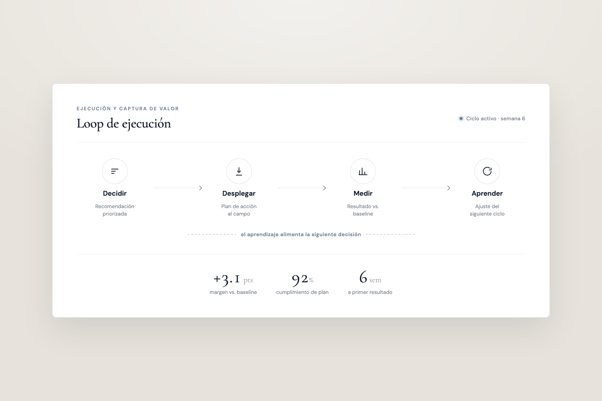

La mayoría de los proyectos se detiene en la recomendación. El Brazo C es donde el trabajo se vuelve real, donde la inteligencia se traduce en acción de campo, se mide contra baseline y se devuelve a la operación.

Muchas organizaciones llegan al diagnóstico. Pocas capturan el valor. La distancia entre un buen análisis y un resultado comercial medible es donde fracasan la mayoría de los proyectos de consultoría.
Se produce un diagnóstico. Se entregan recomendaciones. El deck circula. Seis meses después, el pricing no cambió, las promociones corren igual y la organización ya está en el siguiente proyecto. El insight existía. El resultado no llegó.
Esto no es una falla de análisis. Es una falla de traducción: de la recomendación a la decisión, de la decisión a la acción de campo, de la acción de campo a la medición, de la medición al aprendizaje.
No entregamos un deck y nos desconectamos. Nos quedamos en el loop: traduciendo, desplegando, midiendo y devolviendo lo que aprendemos a la operación. La medida del éxito no es la calidad de la recomendación. Es el margen recuperado, el trade spend redirigido y la ejecución vuelta consistente.
Nos quedamos hasta que el valor es capturado.
La ejecución se entrega en dos modos, según dónde se necesite.
Concierge corre la interacción omnicanal con el cliente en tu nombre: toma pedidos, recomienda y atiende al cliente, a través del Companion, una capa conversacional con dashboards en vivo. La IA hace el trabajo; nosotros lo operamos.
Cuando el trabajo pertenece dentro de tu organización, construimos la capacidad: ways of working, playbooks de RGM, dashboards y gobierno, para que tu equipo opere y las decisiones se sostengan.
El output del Brazo B es un conjunto de insights y recomendaciones. C1 lo convierte en una lista de acciones específica y secuenciada: qué se hace primero, qué se hace después, qué no se hace en absoluto, con responsables y plazos.
Esto no es un resumen del análisis. Es un plan operativo construido a partir de él.
Cada acción priorizada se diseña como una iniciativa ejecutable: qué cambia, dónde, para quién, para cuándo y cómo se va a medir. Cada iniciativa tiene un baseline definido y un resultado esperado antes de lanzarse.
Aquí se construyen los playbooks y las guías: la lógica comercial vuelta operativa para los equipos que la van a ejecutar.
No solo entregamos el plan. Trabajamos junto a los equipos responsables de la ejecución (comercial, trade, key accounts, fuerza de campo) hasta que la lógica opera por sí sola.
Esto incluye capacitación, soporte en tiempo real, interpretación de señales de mercado y adaptación cuando la ejecución revela brechas en el plan original.
Los resultados se comparan contra el baseline establecido antes de lanzar cada iniciativa. No contra un objetivo móvil, sino contra una referencia fija que permite medir con honestidad lo que la iniciativa produjo.
Dashboards de KPIs, análisis de varianza y revisiones ciclo a ciclo se integran en la infraestructura de seguimiento desde el inicio.
Cada ciclo le enseña algo a la operación. Los resultados de ejecución (qué funcionó, qué no y por qué) se estructuran y se devuelven a los modelos, las reglas y las prioridades que guían el siguiente ciclo.
Aquí es donde la madurez comercial se acumula. La operación no solo repite el mismo análisis. Mejora con cada iteración.
La mayoría de los proyectos de consultoría terminan cuando se entrega la presentación. El Brazo C empieza ahí. Seguimos comprometidos a través de la ejecución, la medición y el primer ciclo de aprendizaje.
Cada iniciativa tiene un baseline predefinido. El éxito no se define por la percepción de mejora del cliente, se define por el delta entre lo que pasó y lo que habría pasado sin la iniciativa.
Lo que el Brazo C aprende en la ejecución no se pierde. Se estructura y se devuelve a los modelos analíticos, la infraestructura de data y el marco de prioridades, para que cada ciclo esté más informado que el anterior.
Agenda una llamada de 30 minutos. Te mostramos dónde existe esa brecha en tu operación actual y cómo se ve cerrarla.
Agendar llamada